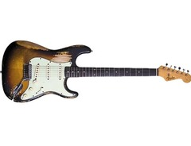
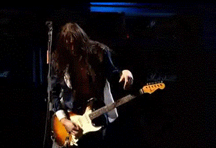

The Guitar

Fender Strat
A Vintage 1969 Fender Tobaccoo Stained Stratacastor with Authentic plectorum damage and the same Elixor Strings.
- $2,000
- Qty:
x
Frusciantes Stratocastor Guitar
Shopping Cart

The American Special Stratocaster puts U.S-made Fender quality into the hands of players at any level. For the guitarist who wants a combination of timeless Fender style and contemporary features, this guitar delivers traditional Strat® design with some extra elements for modern tone and performance, including Texas Special™ pickups and special circuitry, modern neck profile and fingerboard radius, and more. Great sounding, great looking and feeling, and made in the United States.
- Maple neck with "C" profile and "large" headstock
- 9.5"-radius maple fingerboard with 22 jumbo frets
- Three Texas Special™ single-coil Stratocaster pickups
Qty.